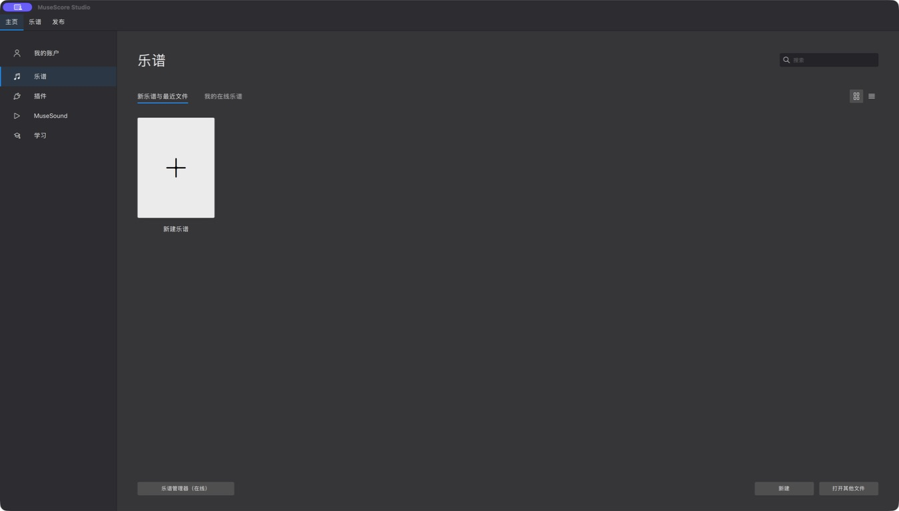
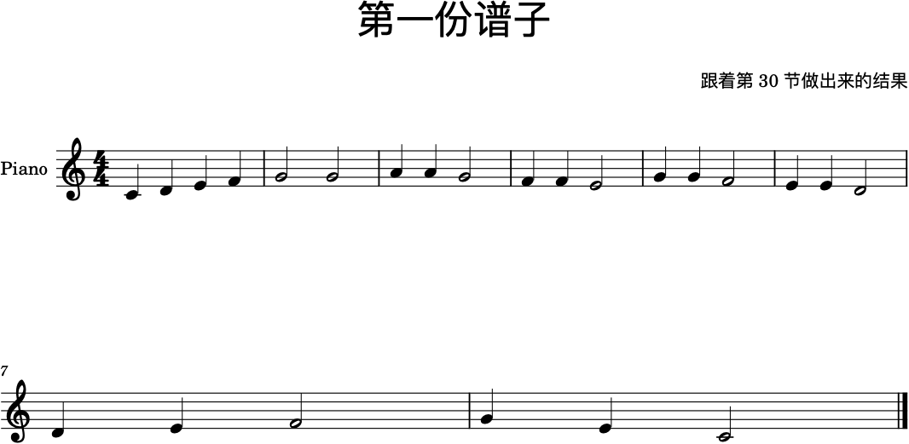

第 30 节 · MuseScore 入门
从一张白纸到一份能响的谱子
前面 29 节都在讲音乐本身怎么运作。从现在起换一件事： 把你听见的东西写成别人也能读的谱子。
这一节只做四件事：新建、输入、播放、保存。做完你手上会有一份自己的谱。
- 软件
- MuseScore Studio 4（免费、开源，官网直接下载）
- 本文对应版本
- 4.7.x（界面是中文本地化的，下面的菜单名按中文界面写）
- 它是什么
- 记谱软件：把音符写成乐谱，并且能播放出来
- 它不是什么
- 不是 DAW。它管的是"谱子对不对"，不是"混音好不好听"
- 学它的理由
- 本站前面所有练习都可以在这里落成一份真正的谱：动机、模进、和声、配器
一 · 打开它：启动中心
MuseScore 打开后先给你一个启动中心。左边三栏分别是主页、乐谱、发布， 中间是最近打开的谱子，右下角两个按钮：新建和打开其他文件。

这块界面本身没什么可讲的，但它说明了这个软件的工作方式： 一个 .mscz 文件 = 一份谱子，和其他工程文件一样，随时能打开继续改。
二 · 新建一份谱子（向导走五步）
点新建（或启动中心里的"新建乐谱"），会出来一个向导。 它的顺序和你在纸上写谱的顺序是一样的：
一 · 选乐器。左侧按分类（键盘、弦乐、管乐、打击……）列出乐器， 双击或按"添加"把它放进右边的声部表。一页钢琴谱选 Piano 就够。
二 · 调号。你的曲子是 C 大调就选 0 个升降号，G 大调选一个升号。 不确定就选 C 大调——后面随时能改（格式 → 调号）。
三 · 拍号。4/4、3/4、6/8 在这里选。同样，后面能改。
四 · 速度。这个数就是播放速度，也是谱面上那个 =120 的来历。它是真的速度，不是装饰。
五 · 谱表。要不要括号、几行谱表、要不要小谱表——钢琴谱默认就好。
点完成，你就得到了一张空白的五线谱，标题、作者、谱号、调号、拍号都在该在的位置上。
三 · 输入第一个音符
这是整个软件唯一需要肌肉记忆的地方。记住一个开关和三个键位：
开关：N。按 N 进入音符输入模式，再按 N（或 Esc）退出。 没进这个模式的时候，你敲键盘只会触发菜单快捷键——很多新手卡在这里。
音名：A 到 G。键盘上 a b c d e f g 直接输入 C D E F G A B。 想换音高：用方向键↑↓在你的音阶上走一个音级，要跳八度就用右键菜单里的移调命令， 比记组合键稳。
时值：数字 1 到 9。这是最容易记错的一栏—— 数字越小，音符越短、尾巴越多：5 是四分音符，4 是八分，3 是十六分， 6 是二分，7 是全音符。按下去只影响"下一个要写的音符"。 想写休止符，按 0。
推进：空格。在输入模式下，空格把光标推进到下一个小节位置。
下面是照这套流程敲出来的一份 8 小节谱子（C 大调、4/4）： 第一行四个音一级级往上爬，后面每一句都收在主音附近，最后一句落在 C 上。

注意第二行左边那个小小的「7」——那是小节号。 打谱软件会替你算好小节、行距和符尾，你只需要决定音高和时值。 这正是用软件打谱和手写的最大区别：结构是软件管的，音乐是你管的。
四 · 让它出声
按空格开始/停止播放（也可以在工具栏上点播放键）。 播放的时候会有一个游标跟着走——这就是本站每一节里那个"音符条"的原型： 看见现在响的是哪一个音，才知道自己写错了哪一拍。
要单独听某一段：先用鼠标框选几个小节，再按空格，MuseScore 只播放选中的部分。 这个动作在本站后面的练习里会一直用到——写一句、听一句、改一句。
觉得音色难听是正常的：默认音源是合成器。想好听一点可以在"视图 → 混音器"里换音色， 但打谱阶段不要在这里花时间，写对音符比调音色重要一百倍。
五 · 存下来，并且知道存的是什么
Ctrl/Cmd + S 保存，得到的是一个 .mscz 文件。 这是"工作文件"——里面不只有音符，还有你的排版、音色、页面设置。 继续编辑就打开它。
给别人或者在别的软件里用，就要导出（文件 → 导出）： 最常用的两种是 PDF（打印和给别人看）和 MusicXML（给别的打谱软件读）。 导出的细节放在第 32 节讲。
六 · 练习
一 · 音阶。新建一份 C 大调 4/4 谱子，把 C 大调音阶一个八度写进去， 全部用四分音符（按 5）。写完播放一遍，听有没有哪个音明显不对。
二 · 改时值。把音阶改成"四个一组：长-短-短-长"， 用 6（二分）和 4（八分）搭出来。听同一个旋律换节奏是什么效果。
三 · 用上前面学过的东西。写两个小节的动机（第 23 节）， 然后把它原样重复一遍。你就在谱面上完成了"重复"这个最基本的发展手法。
四 · 一个自检。写完以后不要马上播放，先自己看一遍： 每一小节是不是刚好装满？最后一小节的时值对不对？——这是打谱最常出错的地方。
七 · 参考
资料
MuseScore 官方下载（免费、开源，Windows / macOS / Linux）
MuseScore 官方手册（中文）——遇到不确定的菜单名先查这里
默认快捷键表（英文）——本文只写了最常用的几个，
想查全的看这一页
本站的做法：每一节都用一份真实的谱子当例子。
这一节用到的示例谱放在
assets/musescore/30-first-score.musicxml，
可以直接用 MuseScore 打开对照——MusicXML 是通用交换格式，
哪个打谱软件都能读。
一句话带走
打谱软件负责结构，你负责音乐。 小节、行距、符尾它会替你算好；音高、时值、句法一个字都不会替你决定。